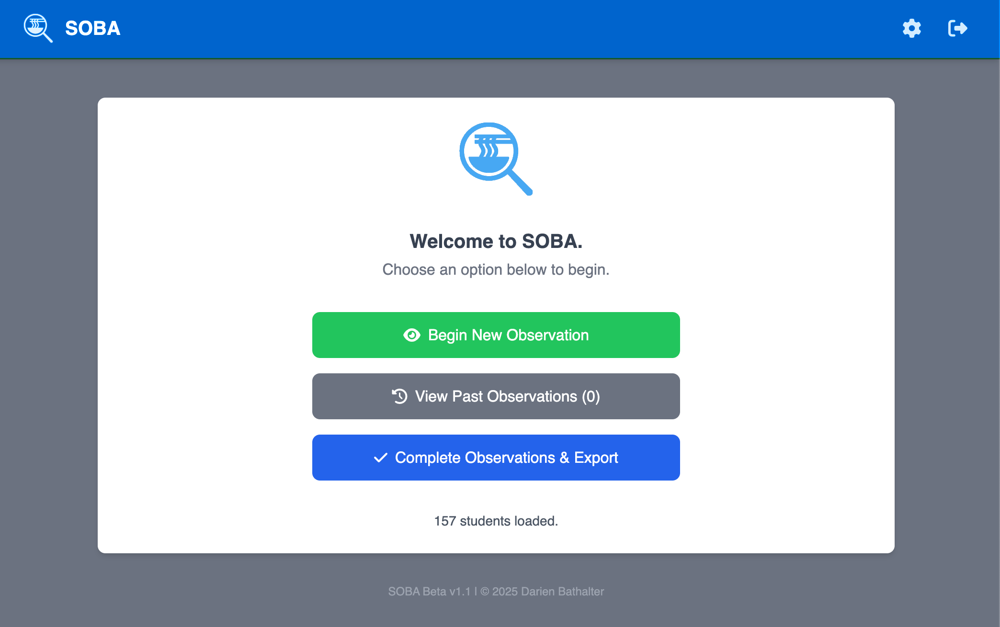

Student Observation Based Analytics
 SOBA
SOBA
Streamline classroom observations and professional development for educators.
SOBA transforms how administrators and instructional coaches observe, evaluate, and support teachers. Replace paper-based systems with intuitive digital workflows that save hours of administrative time.
